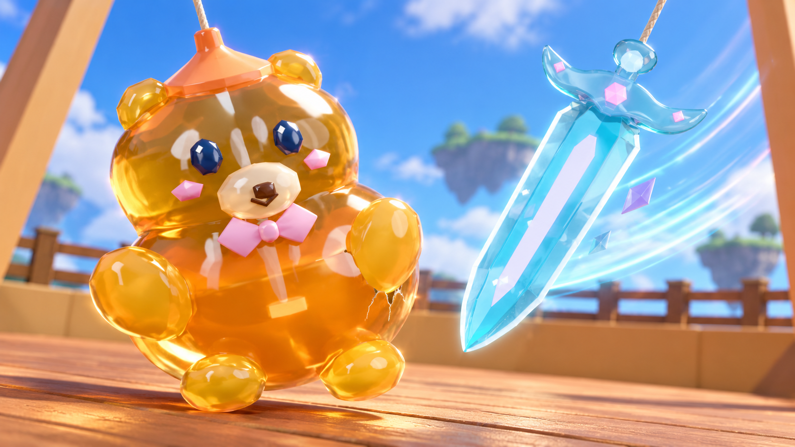
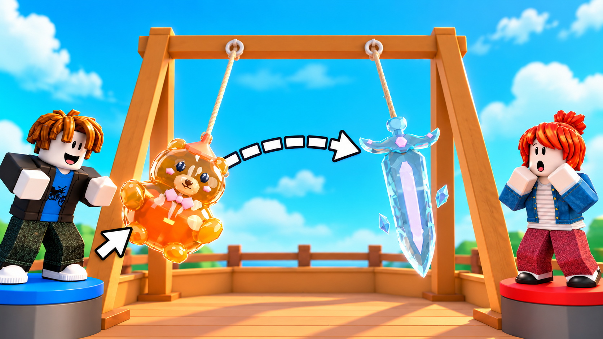
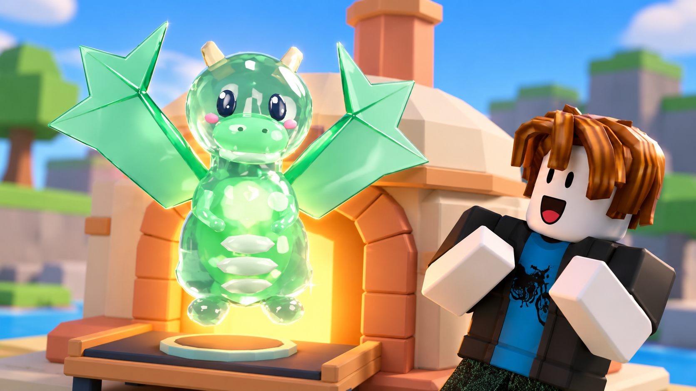

1. Incoming Blade

2. Pull to Smash

3. Lucky Kiln Pull




Display scaling only; original PNG files are untouched. Native dimensions and source references are recorded in README.md and PROMPTS.md. This preview is a visual check, not CTR evidence.